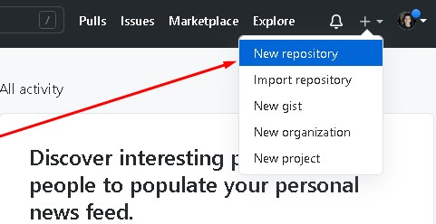
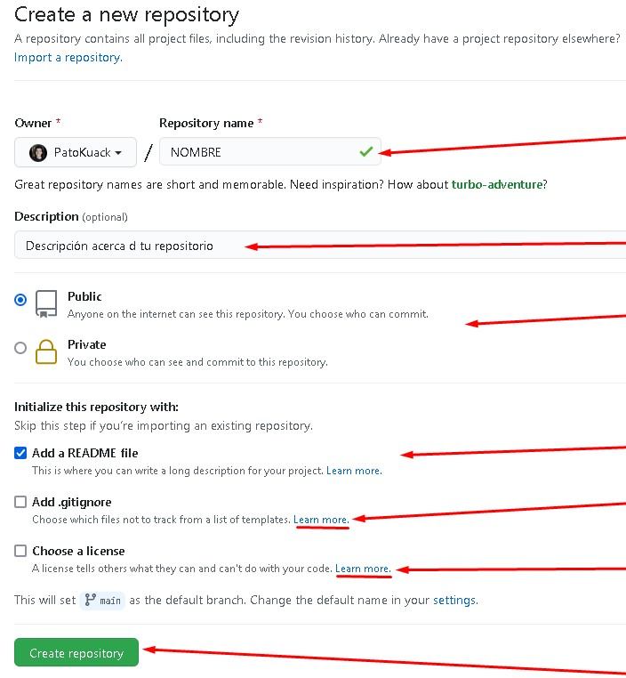
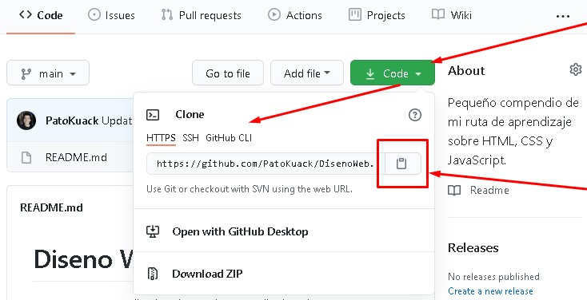
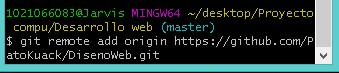
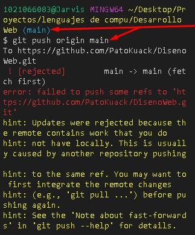
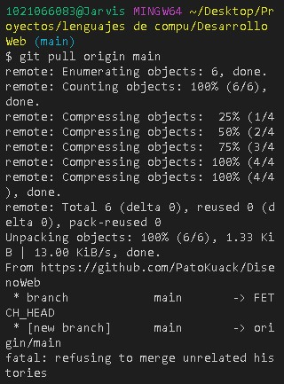
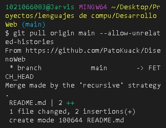
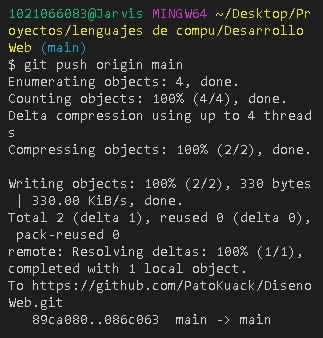

Creando un repositorio en GitHub.
Se selecciona en el menu, la opción "crear repositorio".
Se le asigna nombre, descripción, publico o privado, agregar un README (introducción al proyecto) y si se desea un gitignore y/o una licencia.
Se despliega la opción CLONE en donde se puede copiar la URL del repositorio para poder clonarlo.
Cuando se instala git se obtiene una terminal llamada GitBash, desde esta terminal se debe acceder a la carpeta raíz que contiene el proyecto que se subirá al repositorio, una vez posicionado ahí se usa el comando git init para inicializar el repositorio, después se utiliza el código git remote add origin URL copiado para crear un "origin" con el que se descarga el repositorio y se suben cambios o aportes desde nuestro computador.
Con el comando git remote -v se puede comprobar que se hizo todo correctamente, aparecerá un texto que indica el origin, la URL y entre parentesis "fetch" y "push".
Cambiarle el nombre a la rama principal.
Si la rama principal se llama "master" se le debe cambiar el nombre a la rama principal ya que desde 2020 se dejó de utilizar "master" para convertirse en "main".
Con el comando git checkout master nos posicionamos en la rama master, después se escribe el comando git branch -m main
Con el comando git config --global init.defaultBranch main se indica que las ramas principales sean main para futuros proyectos.
Se envia al origen, la rama main con el comando git push origin main. Si se queda pasmada la terminal de git permitiendo solo ingresar texto, entonces se presiona CONTROL + c para detener el proceso, después se abre otra terminal como en CMD o preferentemente una terminal de "visual studio code" y se vuelve a escribir este comando.
Se integran los cambios remotos antes de hacer un push, para esto se importa el repositorio, desde el origen a la rama main con el comando git pull origin main
Se fucionan las historias no relacionadas, es decir, la rama local y la rama de GitHub con el comando git pull origin main --allow-unrelated-histories, esto generalmente solo se usa con el primer pull a un repositorio.
Se sube el proyecto con todos sus commits con el comando git push origin main
Por último...
Se recarga la página de GitHub y se podrá visualizar los archivos y su información como sus comits o fecha de última modificación.
Si se desea agregar más contenido o modificar un archivo desde el repositorio local, se mandan los cambios guardados al repositorio de Github desde GitBash con los comandos:
- git pull origin main
- -Editar o agregar código al proyecto-
- git add .
- git commit -m "_breve descripción de los cambios_"
- git push origin main